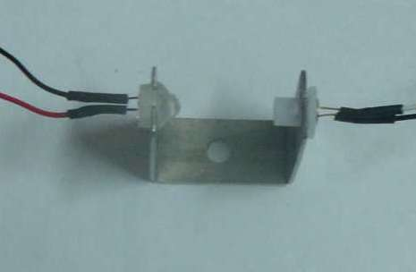
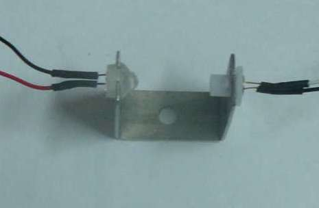

Accélération de la pesanteur à l’aide d’un pendule pesant
Objectif
Mesurer la période des oscillations d’un pendule pesant à l’aide d’une
barrière photo-électrique et calculer l’accélération de la pesanteur. La
période des oscillations d’une tige uniforme autour d’une de ses
extrémités est donnée par  , où
, où  est la
longueur et
est la
longueur et  est l’accélération de la pesanteur. Le pendule (en forme
de
est l’accélération de la pesanteur. Le pendule (en forme
de  , un bord de couteau fixé à une tige de diamètre 6mm) est mis à
osciller entre une DEL et un photo-transistor, connectés à ExpEYES. La
DEL et le photo-transistor sont montés sur un support en forme de
, un bord de couteau fixé à une tige de diamètre 6mm) est mis à
osciller entre une DEL et un photo-transistor, connectés à ExpEYES. La
DEL et le photo-transistor sont montés sur un support en forme de  comme le montre la figure.
comme le montre la figure.
 

{kind=link}
Procédure
- Mettre le pendule en oscillation et cliquer sur DÉMARRER
- Recommencer avec diverses longueurs de pendule.
Discussion
La période est mesurée 50fois, à l’aide d’un pendule pesant de
14,6cm, et la valeur moyenne est 0,627s. La valeur calculée de
g est  , légèrement différente de la
valeur réelle pour les raisons suivantes: La longueur est mesurée
depuis le bord du couteau jusqu’au bas de la tige et utilisée dans la
formule. Mais il y a un peu de masse présente au-dessus du fil du
couteau qui n’est pas comprise dans le calcul. Une autre raison peut
être que le pendule n’est peut-être pas exactement vertical dans la
position de repos.
, légèrement différente de la
valeur réelle pour les raisons suivantes: La longueur est mesurée
depuis le bord du couteau jusqu’au bas de la tige et utilisée dans la
formule. Mais il y a un peu de masse présente au-dessus du fil du
couteau qui n’est pas comprise dans le calcul. Une autre raison peut
être que le pendule n’est peut-être pas exactement vertical dans la
position de repos.